- - It's Buffy and all her friends.
- - That's witty.
- Ever wonder why nobody cool
- hangs out with you?
- Just thankful.
- Were you this popular at your old school
- before you got kicked out?
- Careful. She might beat you up.
- Hey!
- - Buffy!
- - You missed it!
- - Missed what?
- - We saw the zebras mating! Very exciting!
- It was like the Heimlich with stripes!
- And I missed it. Yet somehow
- I'll find the courage to live on.
- - Where were you?
- - Looking at the fishes.
- - Was it cool?
- - It was fishes.
- I'm feeling you're not in the field-trip spirit.
- It's nothing. We did the same zoo trip
- at my old school every year.
- Same old same old.
- This isn'tjust about looking at some animals.
- This is about not being in class.
- You're right. Suddenly the animals
- look shiny and new.
- 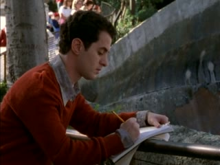
- - How's it going?
- - Hey, Kyle.
- 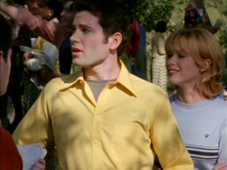
- So, is this like a, uh, family reunion?
- - No.
- - I think it's a family reunion. It's so
- touching. Doesn't anybody have a camera?
- Does your mom pick out your lice,
- or can you do that yourself now?
- - It's got my notes in there!
- - What's going on here?
- I've had it up to here with you four.

- - What are you doing?
- - Nothing.
- OK, I guess I did.
- But I want the truth. Lance?
- They weren't doing anything.
- Really. We were just playing around.

- He's been looking for a reason
- to come down on us.
- - It's OK.
- - Let's check out the hyena house.
- - But I think it's off limits.
- - And therein, my friend, lies the fun.
- What are Kyle and his buds
- doing with Lance?
- Playing with him as a cat plays with a mouse.
- - What is it with them?
- - They're obnoxious. Professionally.
- You start a new school, you get your desks,
- some blackboards and some mean kids.
- - I'd better track Lance...
- - I'll handle it.
- This job doesn't require actual slaying.
- You don't think we should follow?
- Kyle and those guys are jerks,
- but they're all talk.
- - Mostly.
- - Why don't we...?
- Hold it, hold it.
- Are you blind orjust illiterate?
- - Hyenas are quick to prey on the weak.
- - We were just...
- 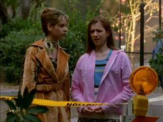
- You're not going in.
- Anyone that does is in a world of trouble.
- No. No one's going in there.
- Why is it off limits?
- It's a quarantine. These hyenas
- just came in from Africa, so keep out.
- - Even if they call your name.
- - What are you talking about?
- A Masai tribesman told me that hyenas
- are able to understand human speech.
- They follow humans around by day,
- learning their names.
- At night, when the campfire dies,
- they call out to a person.
- - It looks cute.
- - I think it looks hungry.
- - Come on, Spot! Suppertime!
- - Stop... Guys...
- 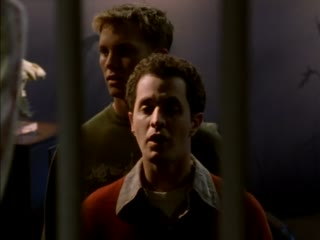
- - Pick on someone your own species.
- - Are you gonna get in my face?
- I thought Xander would be here by now.
- That'd make him on time.
- We couldn't have that.
- Did he seem upset at all
- on the bus back from the zoo?
- I don't know. He was quiet.
- I didn't notice anything.
- 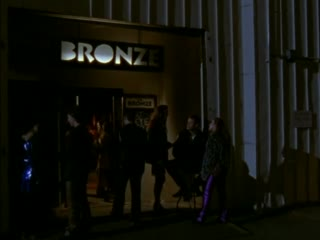
- But then again, I'm not as hyper-aware
- of him as, say, for example, you.
- Hyper-aware?
- I'm not constantly monitoring his health,
- his moods, his blood pressure.
- He makes my head go tingly.
- You know what I mean?
- - I dimly recall.
- - But it hasn't happened to you lately?
- Not even for a dangerous
- and mysterious older man
- whose leatherjacket you're wearing?
- 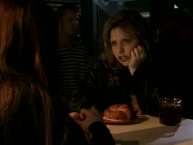
- - It goes with the shoes.
- - Come on!
- Angel pushes your buttons.
- You know he does.
- I suppose some girls
- might find him good-Iooking.
- If they have eyes.
- All right, he's a honey, but
- it's just he's never around, and,
- when he is, all he wants to do
- is talk about vampires and I...
- - I can't have a relationship...
- - There he is!
- Sorry I'm late. I just forgot
- that we were gonna be here.
- - Hungry!
- - Still want help with geometry tomorrow?
- - Well, it was my buttery croissant.
- - Man, I need some food. Birds live on this.
- - What's up with you?
- - Is something wrong?
- - Did I do something?
- - What could you possibly do?
- That's crazy talk. I'm just... restless.
- - Well, we could go to the ice-cream place.
- - I like it here.
- - OK, now what?
- - You took a bath.
- Yeah. I often do. I'm actually known for it.
- And the weird-behaviour award goes to...?
- Oh, great! It's the winged monkeys.
- You know, I don't understand
- why you're sitting at our table.
- Shouldn't you be hovering over the football
- stadium with Goodyear written on you?
- Right! That's enough training for one day.
- That last round was sloppy.
- Want to do it again?
- You just run along to class.

- While I wait for the feeling
- to return to my arms.
- Stop! Whoa! Get it! Get it!
- Lordy, Herbert!
- Gave Mr Flutie quite a scare, didn't he?
- 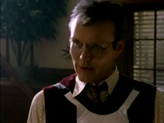
- Students, I'd like you all to meet Herbert,
- our new mascot
- for the Sunnydale High Razorbacks!
- - He's so cute!
- - He's not cute! No! He's a fierce razorback!
- - He doesn't look mean, Mr Flutie.
- - He's mean. He's ready for action, see?
- Here are the tusks... A scary razorback.
- You're right. He's a fine mascot
- and will engender school spirit.

- He'd better. Costs a fortune to feed him.
- All right, let's get you back into your cage.
- - I'm not getting this.
- - It's simple, really.
- is the line that divides the angle
- at that vertex into two equal parts.
- It's a big blur, these numbers and angles.
- It's the same stuff from last week.
- - Why do I need to learn this?
- - Because otherwise you'll flunk math.
- You fail math, you flunk out of school,
- you end up being the guy
- at the pizza place that says:
- "Hey, kids, where's
- the cool parties this weekend?"
- We've been through this.
- Do you have a headache?
- Yeah. And I think I know what's causing it.
- Ah! That's better.
- It goes right to the source of the pain.
- - Xander...
- - Forget it, OK? I don't get it. I won't ever.
- We can finish this another time.
- See, the problem is you kids today
- have no school spirit.

- Hold on. Let me get his outfit off.
- Today it's all gangs and drugs and
- those movies on Showtime with the nudity.
- I don't have cable. I heard.
- At your age, we cared about the school's
- reputation and the football team.
- Of course, when I was your age,
- I had old guys saying how much better
- things were when they were my age.
- All right... it's raining.
- All regular gym classes
- have been postponed.
- 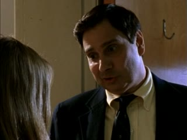
- So you know what that means.
- For those of you that may have forgotten,
- the rules are as follows:
- - Here we go!
- - On your guards!
- God, this game is brutal.
- Xander?
- What's wrong with you?
- I guess you've noticed
- I've been different lately.

- I think it's because my feelings for you
- have been changing.
- And we've been friends
- for such a long time
- that I feel like I need to tell you something.

- I've decided to drop geometry. So I won't
- be needing your math help any more.
- Which means I won't have to look
- at your pasty face again.
- Are you gonna say something to me?
- That's no way to play lead guitar!
- That's hunt and peck.
- It's not!
- You heard Wretched Refuse play.
- What do you think of the lead?
- Hey!
- - What are you...?
- - Shut up.
- - Good?
- - It's too well done.
- I've known him my whole life, Buffy.

- We haven't always been close,
- but he's never...
- I think something's wrong with him.
- Or maybe there's something wrong with me.
- What are you talking about?
- Come on. He's not picking on you.
- He's just sniffing you a lot.
- I don't know.
- Maybe three isn't company any more.
- You think this has something to do with me?

- No. That doesn't explain why
- he's hanging out with the Dode Patrol.
- Something's going on. Something weird.
- Talk to the expert on weird.

- Xander's teasing the less fortunate?
- There's a noticeable change
- in clothing and demeanour?
- 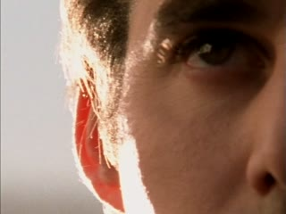
- All his spare time is spent
- lounging about with imbeciles?

- - It's bad, isn't it?
- - It's devastating.
- He's turned into a 16-year-old boy.
- You'll have to kill him.
- - Giles, I'm serious!
- - So am I!
- Except for the part about killing him.
- Testosterone is a great equaliser.
- Turns all men into morons. He'll get over it.
- I cannot believe
- that you are trying to Scully me!
- There is something supernatural at work
- here. Get your books! Look stuff up!
- I don't know. That's your department.
- The evidence you have is sketchy at best.
- 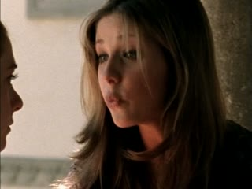
- - Well, he did.
- - Buffy, boys can be cruel.
- They tease. They prey on the weak.
- It's a natural teen behaviour pattern.
- They prey on the weak.
- I've heard that somewhere before...
- Xander has been acting totally wiggy
- since we went to the zoo.
- Him and Kyle went into the hyena cage.
- 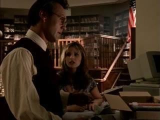
- - You're saying Xander's becoming a hyena?
- - I don't know.

- Or been possessed by one?
- Not just Xander. All of them.
- - Well, I've certainly never heard of...
- - Herbert! They've found him!

- - Principal Flutie's freaking out.
- - Testosterone, huh?

- - What?
- - Oh, don't think I don't know.
- Three kids saw you outside Herbert's room.
- You're busted. Yeah. You're going down.
- - How is Herbert?
- - Crunchy!
- That's it! My office! Right now!
- You'll have so much detention, your
- grandchildren will be staying after school!
- Wow! Apparently, Noah rejected
- the hyenas from the Ark
- cos he thought they were an evil,
- impure mixture of dogs and cats.
- Hyenas aren't well liked.
- They do seem to be the schmoes
- of the animal kingdom.
- Why couldn't Xander be possessed
- by a puppy or some ducks?
- - Assuming "possession" is the right word.
- - I'll say it is.
- The Masai of the Serengeti have spoken
- of animal possession for generations.
- - I should've remembered.
- - How does it work?
- 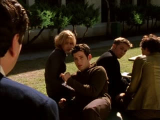
- There's a sect of animal worshippers
- known as primals.
- They believe that humanity
- consciousness the soul
- is a perversion, a dilution of spirit.
- To them the animal state is holy.
- They're able,
- through transpossession, to
- draw the spirit of certain animals
- into themselves.
- Then they act like hyenas?
- Only the most predatory of animals are of
- interest to primals. So, yes, that would fit.
- So, what happens to the person
- once the spirit's in them?
- This is ridiculous. We need to talk.

- I've been waiting for you to jump my bones!
- I have seen some sick things
- in my life, believe me!
- But this is beyond the pale!
- What is it with you people? Is it drugs?
- How could you? A poor, defenceless pig!
- - Get off of me!
- - Is that what you really want?
- We both know what you really want.
- You want danger, don't ya?
- 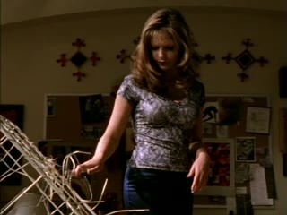
- - You like your men dangerous.
- - You're in trouble.
- You are infected with some hyena thing.
- Dangerous and mean, right?
- Like Angel, your mystery guy.
- Well, guess who just got mean.
- Now stop that! You're only gonna
- make things worse for yourselves.
- I am gonna call your parents,
- and they're gonna take you all home.
- Do you know how long I've waited
- until you'd stop pretending
- that we aren't attracted...
- Until Willow stops kidding herself
- 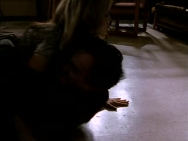
- that I could settle with anyone but you

- Xander, I don't wanna hurt you.
- Now do you wanna hurt me?
- Come on, Slayer. I like it when you're scared.
- The more I scare you... the better you smell.
- You're about this close to expulsion, people!

- But I'm willing to talk to the school
- counsellor and we can discuss options.
- 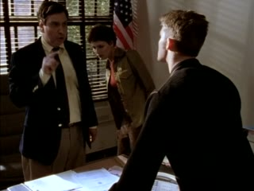
- Get down from there this instant!
- Hurry up! We've got to lock him up
- before he comes to.
- - Oh, my God! What happened?
- - I hit him.
- - He tried his hand at felony sexual assault.
- - Buffy, the hyena in him didn't...
- No. But in his animal state,
- his idea of wooing
- doesn't involve a Yanni CD
- and a bottle of Chianti.

- - There. That oughta hold him. Where's Giles?
- - At some teachers' meeting.
- What are we gonna do?
- How do we get Xander back?
- I'm more worried about
- what the rest of the pack are up to.
- The rest of the pack was spotted
- outside Herbert the mascot's cage.
- - They were sent to the principal's office.
- - Good. That'll show 'em.
- They didn't hurt him, did they?
- They ate Principal Flutie?

- The, uh, official theory is that wild dogs
- got into his office somehow.
- There was no one at the scene.
- But Xander didn't. He was with you.
- Oh, well, that's a small mercy.
- How do we stop this?
- How do you transpossess someone?
- I'm afraid I don't have all the pieces.
- 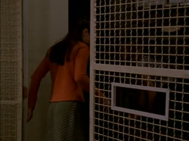
- Accounts of the primals and
- their methods are thin on the ground.
- There is some talk of a predatory act,
- but the exact ritual is, um...
- The Malleus Maleficarum deals in the
- particulars of demonic possession, which
- Yes. One should be able
- to transfer the spirits to another human.

- Oh, that's great! Any volunteers?

- What we need to do
- is put the hyena back in the hyena.
- - Until we know more...
- - Bet that zookeeper could help.
- Maybe he didn't quarantine them
- because they were sick.
- - We should talk to him.
- - OK.
- - Oh, wait! Somebody's gotta watch Xander.
- - I will.
- - Well, are you sure? If he wakes up...
- - I'll be all right. Go.
- Like somebody hit me with a desk.
- - What am I doing here?
- - You're resting.
- You guys got me locked up now.
- Cos you're sick. Buffy said.
- Oh, yeah. Buffy and her all-purpose solution.
- Punch 'em out, knock 'em down.
- What would she do to somebody really sick?
- That's not fair!
- Buffy's saved both of our lives.

- Before she came, our lives didn't
- need that much saving, did they?
- Weren't things a lot simpler
- when it was just you and me?
- - Maybe.
- - When we were alone together.
- I know there's something wrong with me.
- I think it's getting worse.
- But I can't stand around waiting for Buffy
- to decide it's time to punch me out again.
- Look, I want you to help me. I want you.
- - I am helping you.
- - You're doing what you're told.
- Buffy's trying to help you, too.
- You know that.

- Buffy's so selfless. Always thinking of us.
- If I'm so dangerous,
- how come she left you alone with me?
- 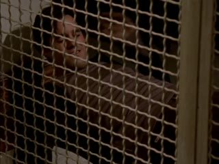
- 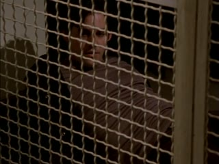
- Cos I know you better than she does.
- 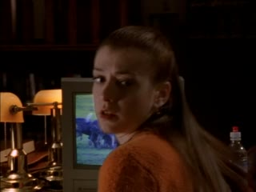
- And I wanted to be here to see if
- you were still you.
- The students have been possessed?
- - We're really, really sure.
- - You don't seem that surprised by this.
- They were imported from Africa.
- They were strange from day one.
- I did some homework.
- That particular breed is very rare.
- Totally vicious. Historically,
- they were worshipped by these guys.
- - Primals.
- - Yeah. Creepy guys.
- They had rituals
- for taking the hyena spirits, but
- I don't see how that happened to your kids.
- We don't know how the ritual works.
- Only that it involves, uh,
- - a predatory act and some symbol.
- - Predatory act?
- Of course. That makes sense.
- Where did you read that?
- - Sherman Jeffries' work on cults and...
- - Boys?
- We may have enough information so that
- we could pull off a reverse transpossession.

- Get those possessed students
- to the hyena cage right away.
- - I'll meet you there. We'll begin the rituals.
- - We can guarantee you one,
- - but four more are missing.
- - Don't worry about that.
- After hyenas feed and rest, they will track
- the missing member until they find him.
- They should come right to you.
- Willow!
- I'm not listening.
- - I think they're going.
- - They could be faking it.
- No, they're looking for somebody weak.
- I didn't know they'd come after Xander.
- - We must lead them back to the zoo.
- - And before their next meal.
- Individually they're as strong as you.
- As a group...
- They're tough. But they're getting stupider.
- Go to the zoo and I'll bring them to you.
- I didn't say she looks better than you.
- I said she looks better.
- I heard what I heard. Joey, chew.
- You have to chew or you'll choke.
- I don't see why we have to have
- this conversation every time we see them.
- Damn!
- - Where are the keys?
- - Huh?
- 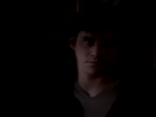
- What's going on?
- Hey, get off! Get off!

- Didn't your mom teach you?
- Don't play with your food.
- Come on. You know what you want.
- The pathway to the hyena house.
- - Where's the zookeeper?
- - He must be inside.
- I'll go in and prepare things. You just...
- warn us when Buffy and the others approach.
- Oh, of course. The, uh...
- Masai ceremonial garb. Yes. Very good.
- Are you, uh, otherwise prepared
- for the transpossession?
- Oh, right. The, uh sacred circle.
- Yes, you'd need that to, um...
- But this would be here
- when the children first came.
- How terribly frustrating for you,
- that schoolchildren could accomplish
- what you could not.
- But the power will be mine.
- They're almost here! Giles! Giles!
- Where are the hyenas
- for the transpossession?
- Right here in the feeding area.
- Stay back. They haven't been fed.
- - Where's Giles?
- - He's... laying in wait.
- 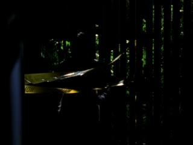
- They're almost here!
- Shouldn't you bring the hyenas out?
- When the time is right.
- I'm gonna need your help.
- A predatory act, remember?
- Uh, right.
- You'll pretend to slash my throat and
- - and put the evil in the hyenas?
- - Something like that.
- Uh... did I miss anything?
- The vice principal's taking over
- till they find a replacement.
- Shouldn't be too hard. Unless they ask
- what happened to the last one.
- - I had nothing to do with that, right?
- - Right.
- - You only ate the pig.
- - I ate a pig?
- Was he cooked and called bacon, or...
- - The whole trichinosis issue aside yuck!
- - It wasn't really you.
- Well, I remember the field trip
- and the hyena house.
- And next thing, some guy's
- holding Willow with a knife.
- - You saved my life.
- - Hey, nobody messes with my Willow.
- This is definitely the superior Xander.
- Accept no substitutes.
- I didn't do anything else, did l,
- around you guys? Anything embarrassing?
- 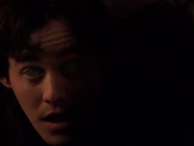
- - We're gonna be late.
- - See you at lunch.
- Cool!
- Oh, hey, going vegetarian, huh?

- I've been reading up on animal possession.
- I cannot find anything anywhere
- about memory loss afterwards.
- - Did you tell them that?
- - Your secret dies with me.
- Shoot me, stuff me, mount me.